，而表示线段长度时则去掉上方的横线，例如，的长度是AB。
，而表示线段长度时则去掉上方的横线，例如，的长度是AB。几何学的起源要追溯至古希腊时期。几何学（geometry）的名称来源于“土地”（geo）和“测量”（metria）这两个词语，而且几何学最初应用于土地勘测与天文学研究。但是，古希腊人是演绎和推理大师，他们把几何学发展成现在这种艺术形式。欧几里得汇总了当时（大约是公元前300年）已知的所有几何学研究成果，编写出有史以来最成功的教科书之一——《几何原本》（The Elements）。这本书介绍的诸多理念，包括数学严谨性、逻辑演绎、公理、证明方法等，在数学界沿用至今。
欧几里得在这本书的开头给出了五条公理（亦称“公设”，即我们可以视作常识的命题）。一旦我们接受了这些公理，就可以根据它们推导出几乎所有的几何学真理。下面就是欧几里得的五条公理。（事实上，他对第五条公理的表述略有不同，但我们在这里给出的与之等价。）
公理1：任意两点都可以用唯一一条线段连接。
公理2：任意线段的两端都可以无限延长，变成直线。
公理3：以任意点O为圆心且经过任意点P的圆只有一个。
公理4：所有直角都是90°。
公理5：经过直线l外一点P，有且只有一条直线与l平行。
有必要告诉大家，我们在本章讨论的是“平面几何”（plane geometry，亦称欧几里得几何），也就是说，我们假设自己身处的环境是一个平面，如x–y平面。但是，如果改变某些公理，我们仍然可以得到某些有趣又有用的数学体系，例如以球面上的点为研究对象的球面几何。球面几何中的“直线”是周长最大的圆（称作大圆），因此，所有的直线都会相交，不存在平行直线。如果对公理5做出修改——至少有两条直线经过点P且与l平行，平面几何就会变成“双曲几何”（hyperbolic geometry）。双曲几何自成体系，有专属的美丽定理。艺术家埃舍尔（Escher）就是利用它创作出大量的版画杰作。下面向大家展示的是运用双曲几何法则绘制而成的一幅图（该图片作者是道格拉斯·邓汉姆）。
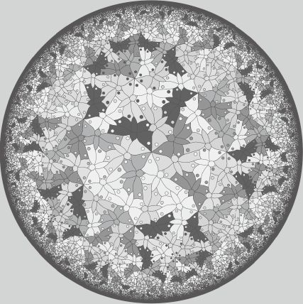
事实上，还有一些欧几里得在《几何原本》中没有提到的公理，我将根据需要，把它们介绍给大家。本章的目的不是取代几何学教材，因此我不会从最基础的几何学内容开始一一讲解。我认为大家对点、直线、角、圆、周长和面积等概念都有直观的认识，我也尽可能地不使用术语和数学符号，以便大家把注意力集中在几何学中最值得关注的内容上。
例如，我假设大家已经知道（或者说愿意接受）圆为360°这个事实。角的度数在0°到360°之间。大家想一想时钟的指针，时针和分针的末端在圆心处重合，1点钟时它们呈现的是1/12个圆，因此夹角是30°；3点钟时它们呈现的是1/4个圆，因此夹角是90°。90°的角叫作直角，此时，我们称构成这个角的直线或线段相互垂直。6点钟时，两根指针形成一条直线，夹角为180°。
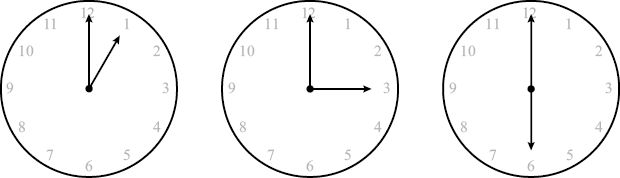
在这里，我要向大家介绍一个有用的符号。连接点A和点B的线段通常被标记为，而表示线段长度时则去掉上方的横线，例如，的长度是AB。
两条直线相交时，会形成4个角，如下图所示。这些角有什么特点呢？可以看出，两个邻角（如角a和角b）加到一起就会变成一条直线，直线的角度为180°。因此，角a与角b的和肯定是180°。这样的两个角叫作“互补角”。
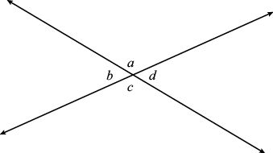
其他几对邻角同样具有这种属性。也就是说：
a + b = 180°
b + c = 180°
c + d = 180°
d + a = 180°
用第一个等式去减第二个等式，得到a – c = 0。也就是说：
a = c
用第二个等式去减第三个等式，就会得到：
b = d
两条直线相交，不相邻的两个角叫作“对顶角”。我们刚刚证明的就是“对顶角定理”：对顶角度数相等。
我们接下来的任务是证明任意三角形的内角和为180°。在开始证明之前，我先介绍平行线的几条属性。如果两条直线永远不会相交，我们就说它们相互平行。（记住，直线的两端可以无限延伸。）下图所示的是两条平行线l1和l2，第三条直线l3不与它们平行，而与它们分别交于点P和点Q。仔细观察就会发现，直线l3与直线l1、l2形成的角的度数相同。也就是说，我们认为 a = e。我们把角a与角e称作“同位角”。（角b和角f、角c和角g、角d和角h也互为同位角。）同位角看起来显然度数相等，但根据欧几里得的五大公理，我们却无法加以证明。因此，我们需要一条新公理。
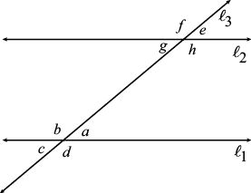
同位角公理：同位角的度数相等。
结合同位角公理和对顶角定理，我们知道在上图中：
a = c = g = e
b = d = h = f
很多书都为相等的两个角赋予了特殊的名称，例如，形成Z字形的角a与角g被称为“内错角”。至此，我们已经证明任意角都与它的对顶角、同位角和内错角的度数相等。接下来，我们利用这个结果证明几何学的一个基本定理。
定理：任意三角形的内角和都是180°。
证明：观察下图所示三角形ABC，它的三个内角分别是角a、角b和角c。过点B画一条直线，并使它与经过点A、点C的直线平行。
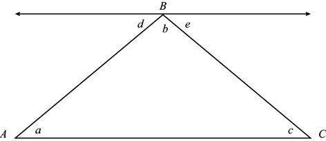
角d、角b和角e形成一条直线，因此 d + b + e = 180°。角a与角d是内错角，角c与角e也是内错角，因此 d = a，e = c，a + b + c =180°。证明完毕。 □
“三角形内角和为180°”是平面几何的一个重要定理，但在其他几何学中未必成立。例如，假设我们在地球上画一个三角形。从北极开始，沿着任意经线到达赤道，然后向右，跨越1/4个地球后再向右转，最终回到北极。这个三角形其实包含三个直角，内角和为270°。在球面几何中，三角形的内角和不是固定值，而与三角形的面积直接相关。
在几何教学活动中，学生们经常需要证明两个不同的图形是全等的。如果一个几何图形经过平移、旋转或翻转后可以得到另一个图形，我们就说这两个图形是全等的。例如，下图中的三角形ABC和三角形DEF就是全等三角形，因为通过平移，三角形DEF恰好可以与三角形ABC完全重合。本书中的图形，如果两条边（或两个角）上有同等数量的短线标记，就表明它们的长度（或角度）相同。
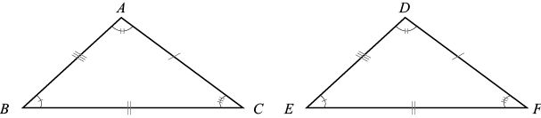
我们用符号表示全等，例如，△ABC △DEF的意思是，这两个三角形的边长和角度完全相同。具体来说，AB、BC、CA分别等于DE、EF、FD，角A、角B、角C的度数分别与角D、角E、角F相等。我们在上图中相等的角上标记了相同的符号，相等的边也做了同样的处理。
一旦知道某些边和角相等之后，我们就会知道其余的边和角肯定也相等。例如，如果你知道两个三角形的三对边都相等，有两对角也相等（比如，∠A = ∠D，∠B = ∠E），那么第三对角必然相等，它们是全等三角形。如果知道有两对边的边长相等，比如AB = DE，AC =DF，而且这两条边的夹角也相等，在这个例子中就是∠A = ∠D，就必然存在以下关系：BC = EF，∠B = ∠E，∠C = ∠F。我们把它称作SAS公理，SAS代表“边—角—边”。
SAS公理不是定理，因为我们不能用已有的公理对其进行证明。但是，一旦我们接受这条公理，我们就可以对SSS（边—边—边）、ASA（角—边—角）、AAS（角—角—边）等重要定理做出严谨的证明。要确保全等，相等的那个角就必须是两对相等的边的夹角，因此我们不能推导出所谓的“SSA定理”。SSS定理非常有意思：如果两个三角形的三条边相等，那么它们的三个角也相等。
接下来，我们用SAS公理来证明非常重要的等腰三角形定理。如果某个三角形有两条边相等，我们就说它是一个“等腰三角形”。既然说到等腰三角形，我再向大家介绍其他几种三角形。三条边都相等的三角形叫作“等边三角形”。有一个角为90°的三角形叫作“直角三角形”。如果三个内角都小于90°，这个三角形就是“锐角三角形”。如果有一个内角大于90°，我们就称它为“钝角三角形”。
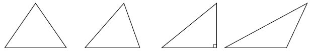
等腰三角形定理：如果等腰三角形ABC的边长AB = AC，那么这两条边所对的角一定相等。
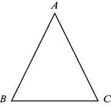
证明：如图所示，从A处画一条直线平分 ∠A（这条直线叫作“角平分线”），与 交于点X。
交于点X。
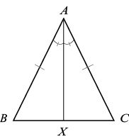
我们认为BAX与CAX是全等三角形，这是因为BA = CA（ABC是等腰三角形），∠BAX = ∠CAX （AX是角平分线），且AX = AX（这不是输入错误。
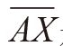
是两个小三角形的公共边，长度必然相同）。因此，根据SAS公理，这两个小三角形是全等的。由于△BAX △CAX，因此其余的边和角也必然相等，即∠B = ∠C。证明完毕。 □利用SSS定理也可以证明等腰三角形定理。先取的中点M，令BM = MC，再画出线段
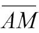
。由于 BA = CA （等腰三角形），AM = AM，MB = MC （M为中点），因此，根据SSS定理，△BAM △CAM，它们的角也都相等，即∠B = ∠C。两个三角形全等，说明 ∠BAM = ∠CAM，因此也是角平分线。此外，由于∠BMA = ∠CMA，而且它们的和是180°，因此它们都等于90°。也就是说，在等腰三角形中，A的角平分线也是的“垂直平分线”。
顺便告诉大家，等腰三角形定理的逆命题也是正确的：如果 ∠B = ∠C，那么AB = AC。证明过程是：从A画一条角平分线至点X。由于∠B = ∠C（条件），∠BAX = ∠CAX （角平分线），AX = AX，因此根据AAS定理，我们断定 △BAX △CAX。由此可知，AB = AC，ABC是等腰三角形。
等边三角形的所有边都相等，因此等腰三角形定理适用于等边三角形，从而证明等边三角形的三个内角都相等。由于三角形的内角和是180°，因此我们可以得出下面的推论。
推论：等边三角形的三个内角都是60°。
根据SSS定理，如果两个三角形ABC和DEF的三对边都相等（AB =DE，BC = EF，CA = FD），那么它们的内角肯定也相等（∠A = ∠D，∠B = ∠E，∠C = ∠F）。它的逆命题也成立吗？如果三角形ABC和DEF的三对角都相等，那么它们的三对边也都相等吗？如下图所示，答案显然是否定的。
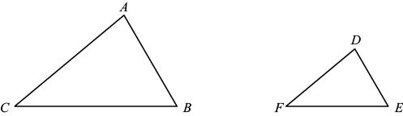
内角度数对应相等的三角形叫作“相似三角形”。如果三角形ABC和DEF相似（记作△ABC△DEF，或者是 ABCDEF），那么∠A = ∠D，∠B = ∠E，∠C = ∠F。从本质上看，如果两个三角形相似，那么一个三角形是另一个三角形的缩小版。因此，如果△ABC△DEF，那么其对应边长成比例关系，比例因子为正数k。也就是说，DE = kAB，EF = kBC，FD = kCA。
接下来，我们用这些知识来解答本章开头小测试中的问题2。假设有两条平行线，下方那条直线上有一个线段
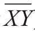
。我们需要完成的任务是在上方那条直线上找到点P，使三角形XYP的周长最小。定理：上方直线上的点P位于中点正上方时，三角形XYP的周长最小。
尽管微积分可以帮助我们解决这个问题，但是过程比较复杂，若利用“映像”原理，我们就可以轻轻松松地找出正确答案。（后面的证明非常有意思，但是过程比较长，大家阅读时可以浏览一下，也可以跳过不读。）
证明：假设P是上方直线上的任意一点，Z为上方直线上的一个固定点，且点Z位于点Y的正上方。（更精确的说法是：
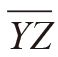
垂直于上下两条直线且与上方直线交于点Z，如下图所示。）Y'位于的延长线上，且Y'Z = ZY。换句话说，上方那条直线就像一面大镜子，Y'是Y经过点Z形成的映像。我断定PZY和PZY'是全等三角形，因为 PZ = PZ，∠PZY = 90°= ∠PZY'，ZY = ZY '，因此，根据SAS定理，两个三角形全等，PY = PY'。
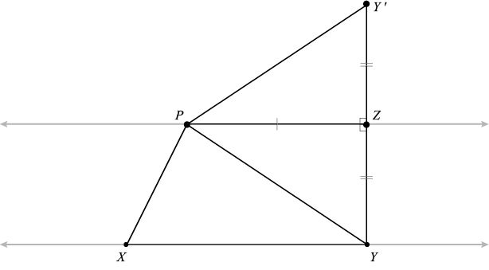
三角形YXP的周长是三个边长之和：
YX + XP + PY
我们已经证明PY = PY'，因此三角形周长也等于：
YX + XP + PY'
因为边长YX与点P的位置无关，因此我们只需考虑XP + PY'的值最小时点P所在的位置。
仔细观察就可以发现，线段
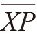
和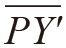
构成了由X至Y'的一条弯曲路径。由于两点之间直线距离最短，因此，从X至Y'画一条直线就可以确定点P的最佳位置点P*，即这条直线与上面那条直线的交点，如下图所示。但是，我们的任务还没有全部完成，因为我们还需要证明点P*位于中点的正上方。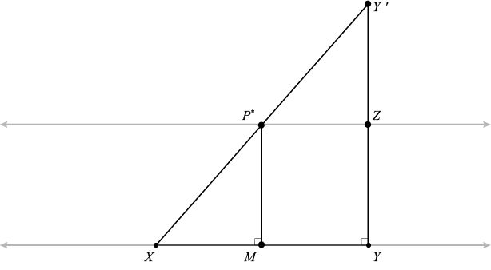
把P*正下方的那个点记作M，就有
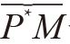
垂直于）。由于上下两条直线平行，因此P*M=ZY。（凭直觉可以得出这个结论，因为平行线之间的距离是一定的。也可以这样证明：画出线段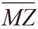
，根据AAS定理可知三角形MYZ与ZP*M全等。）要证明M是的中点，我们先要证明三角形MXP*与YXY'相似。∠MXP*与∠YXY'是同一个角，∠P*MX与∠Y'YX都是直角，因此这两个角也是相等的。由于三角形内角和为180°，其中有两对角相等，那么第三对角也必然相等。这两个相似三角形的比例因子是多少呢？通过构造性证明法，可以得出：
YY' = YZ + ZY' = 2YZ = 2MP*
因此，比例因子为2。也就是说，XM是XY的1/2，M是的中点。
所以，位于上方直线上且使三角形XYP的周长最小的点P*正好在中点的正上方。证明完毕。 □
有时，我们也可以利用代数知识来解决几何问题。例如，假设平面上有线段，其中A的坐标是 (a1，a2)，B的坐标是(b1，b2)，M是的中点，如下图所示。那么，M的坐标为：
例如，如果 A = (1，2)，B = (3，4)，那么的中点M = [(1 + 3)/2,(2 + 4)/2] = ( 2, 3 )。
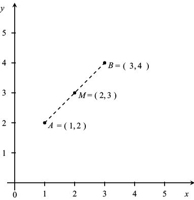
我们利用这个事实来证明三角形的一个重要属性。画一个三角形，然后用线段连接各边中点，其中有什么特点？下面这条定理给出了答案。
三角形中点定理：对于任意三角形ABC，用线段连接的中点和的中点，该线段与三角形的第三条边 平行。此外，如果的长度为b，连接中点的那条线段的长度就为b/2。
平行。此外，如果的长度为b，连接中点的那条线段的长度就为b/2。
证明：如下图所示，以点A为原点(0, 0)、边所在直线为横轴画出坐标系，点C的坐标是(b, 0)。假设点B的坐标为(x, y)，那么的中点坐标为(x/2 , y/2)，的中点坐标为 [(x + b)/2 , y/2]。由于这两个中点的纵坐标相同，连接它们的线段必然是水平的，与边平行。此外，这条线段的长度为 (x + b)/2 – x/2 = b/2。证明完毕。 □
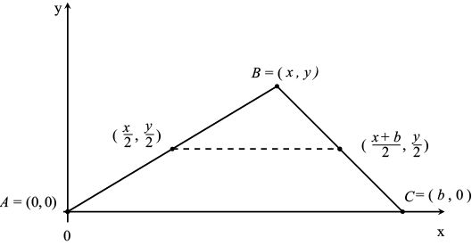
三角形中点定理揭示了本章开头的那个魔术的奥秘：连接四边形ABCD各边的中点，所形成的四边形EFGH一定是平行四边形。为什么？我们从四边形的顶点A至顶点C画一条对角线，如下图所示，这条对角线会把四边形分成三角形ABC和三角形ADC。
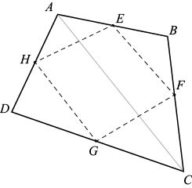
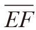
和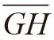
都与平行
观察三角形ABC和ADC。根据三角形中点定理，我们发现与平行，与平行，因此与平行。（而且，与都是的一半，因此它们的长度相等。）同理，如果从B向D画一条对角线，就会发现
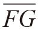
与平行，且长度相等。因此，EFGH是平行四边形。上面这些定理大多都是关于三角形的，实际上，几何学的很多内容都以三角形为研究对象。三角形是最简单的多边形，其次是四边形、五边形等。有n条边的多边形有时被称作“n边形”（n–gon）。我们已经证明三角形的内角和是180°，那么超过三条边的多边形的内角和是多少呢？正方形、矩形、平行四边形等四边形有4条边。矩形的4个内角都是90°，因此它的内角和必然是360°。下面这条定理对任意一个四边形来说都是正确的，你也可以说它是一条结论。
定理：任意四边形的内角和为360°。
证明：如图所示，取任意四边形，顶点分别为A、B、C、D。连接A、C两个顶点，该四边形就会被分割成两个三角形。这两个三角形的内角和均为180°，因此，该四边形的内角和为2×180°= 360°。 □
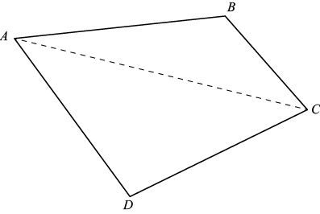
下面我再介绍一条定理，就可以揭示其中的规律。
定理：任意五边形的内角和为540°。
证明：如下图所示，观察顶点为A、B、C、D、E的任意五边形。连接A和C，五边形就会被分割成一个三角形和一个四边形。我们知道，三角形ABC的内角和为180°，四边形ACDE的内角和为360°，因此，五边形的内角和为180°+ 360°= 540°。证明完毕。 □
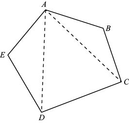
利用归纳性证明法计算n边形的内角和，或者通过连接A与其他顶点将n边形分割成n – 2个三角形，由此我们可以得出下面这条定理。
定理：n边形的内角和为180(n – 2)°。
这条定理有一个神奇的应用。画一个八边形，在其内部任意位置标记5个点。连接顶点和这5个点，使八边形内只包含三角形。（这项操作叫作“三角形分割”。）下面有三个八边形，前两个给出了不同的三角形分割方案，最后一个留给大家自己动手操作。
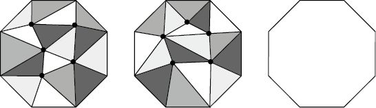
在我给出的两个示例中，都包含16个三角形。你在第三个八边形里取5个点之后，无论这些点处于什么位置，只要你严格按照要求操作，最后都会得到16个三角形。（如果你没有得到16个三角形，那么请你仔细检查八边形内部，确保所有图形都只有三个顶点。如果某个图形看上去像三角形，但实际上是一个四边形，那么你必须在其中添加一个线段，将它分割成两个三角形。）其中的道理可用下面这条定理解释。
定理：如果一个多边形有n条边，内部有p个点，利用这些边和点对该多边形进行三角形分割操作之后，得到的三角形数量一定是2p + n – 2个。
在上例中，n = 8，p = 5，根据这个定理，得到的三角形数量必然是10 + 8 – 2 = 16个。
证明：假设n边形经三角形分割操作后得到T个三角形。我们通过两种方法解答下面的统计问题，从而证明 T = 2p + n – 2。
问题：所有三角形的内角和是多少？
答案1：由于一共有T个三角形，每个三角形的内角和为180°，因此所有三角形的内角和为180T°。
答案2：分两种情况考虑。包围多边形内部各点的角必然绕该点一周，因此这些角的和是360p°。与此同时，我们知道n边形的内角和为180(n – 2)°，因此所有三角形的内角和为360p + 180(n – 2)°。
由于这两个答案相等，因此：
180T = 360 p + 180 (n – 2)
两边同时除以180，就会得到：
T = 2p + n – 2
证明完毕。